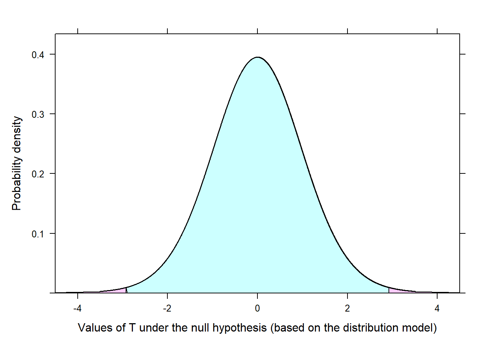

11 Statistical inference framework via a case study
Statistical inference is the practice of making decisions from data in the presence of uncertainty. The common procedures for making statistical inferences include
Hypothesis Testing: Uses representative samples to assess two competing hypotheses about a population parameter or treatment effect.
Confidence Intervals: A range of plausible values for the population parameter or effect value.
11.1 Hypothesis testing framework
This case study is adapted from Ramsey and Schafer (2013) and is discussed in Chapter 2: Reward systems are integrated into schools and in the workplace, but are rewards operating in precisely the opposite way from what is intended? Do external incentives affect creativity? To address this, we will use a study that investigated whether people tend to display different creativity levels when they are thinking about intrinsic or extrinsic motivations. Undergraduate students of similar creative writing experience from a private university in New England were randomly assigned to one of two groups. One group received an intrinsic and the other an extrinsic questionnaire to classify their motivation. All subjects were instructed to write a haiku, and those poems were evaluated for creativity by a panel of judges.
Based on the collected data, do subjects thinking about intrinsic motivations display different creativity than subjects who were thinking about extrinsic motivations?
The sample mean (based on a sample of 24) of the intrinsic group mean is 19.88 and standard deviation 4.44. For the extrinsic group the sample mean (based on a sample of 23) is 15.74 and standard deviation is 5.25. The difference between the sample means is 4.14. Is the difference large enough to convince you that subjects thinking about intrinsic motivations display different levels of creativity than subjects who were thinking about extrinsic motivations? Or is this differences of 4.14 small enough that one may wonder if the size of difference is more due to chance (random/sampling/natural variability) and not due to a motivation type effect.
If the study was reproduced, the results would differ. But if results are different each time, how does one determine how large (in magnitude) the differences in sample means should be in order to say that subjects thinking about intrinsic motivations display different levels creativity than subjects who were thinking about extrinsic motivations?
In terms of the null and alternative hypothesis we have:
\(H_o:\) There is no difference in creativity under extrinsic and intrinsic motivations.
\(H_a:\) Subjects thinking about intrinsic motivations display different levels of creativity than subjects who were thinking about extrinsic motivations.
At this stage, consider how the effect intrinsic motivation on creativity can be quantified. One approach is to quantify the effect by using the difference between the true mean creativity score under intrinsic and extrinsic motivation. Let the true mean under intrinsic motivation be denoted as \(\mu_{int}\). Similarly, we denote the true mean under extrinsic motivation as \(\mu_{ext}\). If motivation type has no effect on creativity, then we should expect \(\mu_{int}-\mu_{ext}=\delta=0\), where \(\delta\) represents the effect of intrinsic motivation on creativity. If subjects thinking about intrinsic motivations display more or less creativity than subjects who were thinking about extrinsic motivations, then this would correspond to \(\mu_{int}-\mu_{ext}\neq 0\) or \(\delta \neq 0\). Thus, \(H_0\) and \(H_a\) may be expressed as
\[H_0: \mu_{int}-\mu_{ext}=0 \qquad H_a:\mu_{int}-\mu_{ext} \neq 0\]
or
\[H_0: \delta=0 \qquad H_a:\delta \neq 0\]
Any hypothesis test is always conducted under the assumption that the null hypothesis is true. The observed data will either provide sufficient evidence to reject this assumption or fail to reject this assumption. A test statistic is simply a sample statistic (numerical summary of the data). An extreme value of the test statistic will be consistent with the idea reflected in \(H_a\).
What is considered extreme depends on the sign of \(H_a\). If the sign is \(>\), then extreme means really large. If the sign is \(<\), then extreme means really small. A \(\neq\) sign means extreme is really large or really small. To evaluate the evidence against the \(H_0\), we compare the observed value of the test statistic to what one would expect to obtain (for the value of test statistics) if \(H_0\) were true (i.e., under the null hypothesis). This will allow one to determine if the observed value of the test statistic is extreme or not if in fact \(H_0\) were true.
A test statistic could be any numerical summary statistic, but the form of the test statistic is generally chosen to have the following qualities:
An extreme value of the test statistic is consistent with the idea reflected in \(H_a\)
The distribution of test statistic under \(H_0\) can be obtained or is known. That is, to determine if the value of the observed test statistic is extreme, we need to know what range of values the test statistic can take under the null hypothesis. This distribution is generally referred to as a Null distribution.
A common test statistic for testing the above hypothesis is of the form:
\[T=\frac{(\bar{y}_{int}-\bar{y}_{ext}) -(\mu_{int}-\mu_{ext})}{\sqrt{\frac{s_{int}^2}{n_{int}}+\frac{s_{ext}^2}{n_{ext}}}}\]
where \(\bar{y}\), \(s\), and \(n\) represent the sample mean, sample standard deviation, and sample size for a given sample. Under \(H_0\), \(\mu_{int}-\mu_{ext}=0\), so the observed value of the test statistic is
\[T=\frac{(\bar{y}_{int}-\bar{y}_{ext}) }{\sqrt{\frac{s_{int}^2}{n_{int}}+\frac{s_{ext}^2}{n_{ext}}}}=\frac{19.88-15.74}{\sqrt{\frac{4.44^2}{24}+\frac{5.25^2}{23}}}= 2.926\]
While a value of \(T=2.926\) (or larger) is consistent with the idea that \(\mu_{int}\neq\mu_{ext}\), is \(T=2.926\) large enough to convince you that in fact \(\mu_{int}\neq\mu_{ext}\), or is its value (\(T=2.926\)) simply due to chance (sampling/natural variability)? To decide between supporting or not supporting what is reflected in \(H_a\), we compute the chances or probability of observing \(T=2.926\) or larger or \(T=-2.926\) or smaller (since the sign in \(H_a\) is \(\neq\)), under the assumption that motivation type has no effect on creativity (\(H_0\) true). If this probability is very low, we would have reason to reject \(H_0\).
To compute this probability, we require the Null distribution of \(T\). That is, if \(\mu_{int}=\mu_{ext}\), what range of values can \(T\) take, and how often does a given range of values of \(T\) occur? If the study were replicated many many times in a scenario where the type of motivation has no effect on creativity (i.e., \(\mu_{int}=\mu_{ext}\)), then \(T\) could be computed for each replication to obtain the Null distribution of \(T\). Such an approach is unrealistic. In practice, one of two methods can be used to obtain the Null distribution.
Simulation-based approach – simulate sample data sets many times under the assumption that motivation type has no effect on creativity. Then calculate the proportion of these simulated sample data sets that provided a value of \(T\) of 2.926 or greater and a value of \(T\) of -2.926 or smaller.
Theory-based approach – Under certain assumptions, statistical theory provides a distribution model for the distribution of \(T\) under \(H_0\). This model can then be used to determine the proportion of times that \(T\) is 2.926 or greater or \(T\) is -2.926 or smaller
11.1.1 A simulation-based approach
A simulation-based approach is used here to illustrate the hypothesis testing framework. The simulation approach used here is called a randomization test. If \(\mu_{int}=\mu_{ext}\), then motivation type has no effect on creativity. So under \(H_0\), a student in the intrinsic group would obtain about the same score as a student in the extrinsic group. In fact, we could just randomly shuffle the students between the groups (extrinsic, intrinsic), since these groups are the same in terms of creativity, as it is not affected by motivation type. Note that this randomization (randomly shuffling students between groups) simulates the assignment of students to groups in a scenario of when a students’ creativity score is independent of motivation type.
Since the random shuffling of students between the two groups is independent of the type of motivation (intrinsic or extrinsic) that they are thinking about, any difference between the groups in terms of creativity is due to chance. That is, the size of the corresponding value of \(T\) is due to randomly shuffling students between the groups (not due to motivation type). Another way to view it is that chance enters through the random assignment of units to treatments and nothing else under \(H_0\). The figure below shows the results of one such simulation. The resulting size of \(T\) under this simulation represents one observed value of \(T\) due to chance when the null hypothesis is assumed to be true.
This simulation process is repeated enough times so that we have a good idea of the shape of the Null distribution of \(T\). The figure below shows a histogram of \(T\) obtained from 10,000 simulations, with the x-axis representing the range of the value of \(T\) under \(H_0\). How often would one observe a value of \(T\) of -2.962 or smaller, or observe a value of \(T\) of 2.962 or greater?
Out of the 10,000 randomizations, only 58 produced a value of 2.926 or larger. That is, it appears that a value of \(T\) of at least 2.926 under \(H_0\) would only occur about 0.6% of the time according to the above histogram. Such a low chance or probability reflects that observing such a large value of \(T\) under \(H_0\) from chance alone is very rare. Since it is nearly impossible to observe a value of \(T=2.926\) or greater (as well as \(-2.926\) or smaller) under \(H_0\), this reflects that the value of \(T=2.926\) inconsistent with \(H_0\), and we reject \(H_0\) in favor of \(H_a\). Here, we conclude that students tend to display different levels of creativity when they are thinking about intrinsic motivations rather than extrinsic motivations.
11.1.2 Theory-based approach
Under certain conditions, statistical theory provides a distribution model for the null distribution of \(T\). This model can then be used to determine the proportion of times that a value of \(T\) of 2.926 or larger would be observed under \(H_0\). Under these certain conditions, most of the theory-based approaches to be discussed work because of a theorem in Statistics called the Central Limit Theorem (CLT). To paraphrase the CLT, it states that if we repeatedly take independent random samples from each population (intrinsically and extrinsically motivated students), the distribution of the difference in sample means (\(\bar{x}_{int}-\bar{x}_{ext}\)) tends to resembles a normal distribution as the sample size increases. This occurs regardless of the shape of the distribution of the populations. As a consequence, the distribution of the test statistic,
\[T=\frac{(\bar{y}_{int}-\bar{y}_{ext}) -(\mu_{int}-\mu_{ext})}{\sqrt{\frac{s_{int}^2}{n_{int}}+\frac{s_{ext}^2}{n_{ext}}}},\]
is a t-distribution with degrees of freedom \(df=min(n_{int}-1, n_{ext}-1)=min(23-1, 24-1)=22\)

Using the distribution model for T under \(H_0\), an extreme value of \(T\) (2.926 or greater, or -2.926 or smaller) would only occur about 0.8% of the time according to the above distributional model. Such a probability (.008) reflects that observing such a large value of \(T\) under \(H_0\) from chance alone is very rare. This indicates that the value of \(T=2.926\) inconsistent with \(H_0\), and we reject \(H_0\) in favor of \(H_a\). We conclude that students tend to display different levels of creativity when they are thinking about intrinsic motivations rather than extrinsic motivations.
11.1.3 Two-sided and one-sided hypothesis test.
The hypothesis test conducted in the case study is what is called a two-sided hypothesis test. If a one-sided test would have been conducted, say with alternative \(H_a:\delta > 0\), then one is exploring only one direction of possibilities. A one-sided hypothesis test may be appropriate when the interest is in a single direction, but generally, we want to consider all possibilities. While one may suspect a certain directional relationship, formulating \(H_a\) to confirm to ones belief about the study will generally inflate what is called a Type 1 Error rate (discussed later in this section). Further, such practices subject themselves to confirmation bias1. With a two-sided hypothesis, it allows one to consider the possibility that the data may reflect something that we may not expect. It is recommended to always use a two-sided hypothesis as to keep an open mind when analyzing data and statistical evidence. In the modules, only two-sided tests are considered.
11.1.4 p-values
Here, we used the simulation based probability of \(.006\) to discuss the p-value, although the same applies to the theory-based probability of \(.008\). The probability of \(0.006\) is called a p-value. The p-value is a measure of the strength of the evidence against the null hypothesis. A small p-value indicates that the observed data are unlikely to occur, if \(H_0\) is true. That is, the null hypothesis is not a reasonable assumption, and we reject \(H_0\).
Consider a p-value as a measure of evidence against \(H_0\). The smaller the p-value (closer to 0), the stronger the evidence against \(H_0\). The larger the p-value, the weaker to evidence against \(H_0\), with a p-value larger than \(.10\) signifying no evidence against the null hypothesis. Note that the p-values measures evidence against \(H_0\), not evidence for \(H_0\) (the absence of evidence is not evidence of absence). The chart below provides some guidance on interpreting the size of the p-value.
| p-value | Inference |
|---|---|
| p-value>.10 | Little to no evidence against the null hypothesis |
| 0.07\(\leq\)p-value< 0.10 | Some evidence against the null hypothesis |
| 0.05\(\leq\)p-value< 0.07 | Moderate evidence against the null hypothesis |
| 0.001\(\leq\)p-value< 0.05 | Strong evidence against the null hypothesis |
| p-value \(\leq\) 0.001 | Very strong evidence against the null hypothesis |
For the case study, the p-value was \(0.0058\). When the p-value is small compared to a set threshold, results are statistically significant. This means the data provide such strong evidence against null hypothesis, that we reject the null hypothesis in favor of the alternative hypothesis. This threshold is called the significance or \(\alpha\) level, which is generally denoted by \(\alpha\). The value of \(\alpha\) is set by the practitioner or researcher, but in practice \(\alpha\) is generally set to \(0.01\), \(0.05\), and \(0.10\), with \(0.05\) being the most common. By choosing an \(\alpha\) level, you are conveying to the reader the strength of evidence required to reject \(H_0\). Regardless of the test used, the decision rule is as follows:
- If p-value \(\leq \alpha\), we reject \(H_0\).
- If p-value \(> \alpha\), we fail to reject \(H_0\).
If \(\alpha=.05\), \(H_0\) is rejected, so we may support what is reflected in \(H_a\). That is, based on the size of the p-value, we have strong evidence that subjects thinking about intrinsic motivations display more creativity than subjects who were thinking about extrinsic motivations at \(\alpha=.05\).
A word of caution with the idea of “statistically significant”. Note that while we concluded the result was statistically significant, it only indicated that the required amount of evidence against \(H_0\) was obtained. However, this result gives us no information regarding the size of the difference (the effect) in creativity scores between the groups. Any effect, no matter how inconsequential, can provide a small p-value if the sample size is extremely large. Also, a large effect may produce a large p-value if the sample size is small. Note that one may select an \(\alpha\) that is smaller or larger than \(0.05\) depending on the consequence of the conclusion reached from a test. Regardless of the \(\alpha\) chosen, the size of the effect and what is practical should be conveyed as well. For those interested on more discussion about the p-value, potential misuse of p-values, and caution with statistical significance, consider reading Baker et al. (2016), Amrhein, Greenland, and McShane (2019), and Lakens (2021).
11.1.5 General steps in hypothesis testing
The following general steps should be followed when conducting a hypothesis test:
- Check assumptions about the data, and write hypotheses.
- The assumptions will vary depending on the test.
- Write the null and alternative hypotheses in terms of the population parameters or treatment effects.
- Calculate the test statistic.
- This calculation can be done using RStudio or another statistical software.
- Determine the p-value using the calculated test statistic.
- This will be done using RStudio or another statistical software.
- Make a decision based on the p-value and the chosen significance level.
- If p-value \(\leq \alpha\), reject the null hypothesis. Otherwise, we fail to reject \(H_0\).
- State a conclusion in the context of the problem.
- The conclusion should be in terms of what is reflected in \(H_a\) in context.
When applying hypothesis tests in the modules, the testing procedures will generally follow these steps.
11.2 Confidence interval framework
A confidence interval (CI) is an approach for estimating a parameter or the treatment effect, and it provides an interval of values (constructed based on the sample data) to provide a range of plausible values of the parameters or effects of interest. In this case study, we construct a CI for \(\mu_{int} - \mu_{ext}=\delta\). Associated with every CI is a confidence level. The confidence level specifies the “success rate” of the CI in capturing/containing the unknown value of the parameter in repeated sampling. That is, if samples are repeatedly obtained and a CI is computed each time, the confidence level specifies the percentage of those CIs that will contain the parameter or effect of interest. Thus, the confidence level associated with a CI tells one how “confident” one should be that the interval captures the value of the parameter or effect of interest (but not the confidence in any one particular interval).
CIs generally follow the same basic form, which depends on the sample statistic(s) and the margin of error (MOE) of the sample statistic(s):
\[(sample ~ statistic(s)) \pm MOE \] Here, the CI for \(\mu_{int} - \mu_{ext}\) takes the form
\[(\bar{y}_{int} - \bar{y}_{ext}) \pm MOE_{(\bar{y}_{int} - \bar{y}_{ext})}\]
where \(MOE_{(\bar{y}_{int} - \bar{y}_{ext})}\) denotes the MOE for \((\bar{y}_{int} - \bar{y}_{ext})\). For a given sample size, the MOE provides a upper bound to the difference between a particular estimate (i.e., a given \(\bar{y}_{int} - \bar{y}_{ext}\)) and the parameter (\(\mu_{int} - \mu_{ext}\)) that it estimates. Common choices for confidence levels are 90%, 95%, and 99%, with 95% being the most common. For the case study, a 95% confidence level for \(\mu_{int} - \mu_{ext}=\delta\) is (1.196, 7.092). Thus, we are 95% confident that the difference between the true mean creativity scores for the intrinsic and extrinsic students is between 1.196 and 7.092. Since the interval only contains positive values, we can conclude that thinking about intrinsic motivations has a positive effect on creativity scores at 95% confidence.
11.3 Decision errors and confidence levels
Hypothesis tests are not flawless. There is always a chance that the wrong decision will be made. The decision errors are called Type I error and Type II error. A Type I error is made when \(H_0\) is rejected when in fact it should not have been rejected. A Type II error occurs when failing to reject \(H_0\) when in fact it should have been rejected. When making a decision in a hypothesis test (HT) one will not know if a Type I error or Type II error is made, but the good news is that one can control the chances of making a Type I error and reduce the chances of making a Type II error.
The probability of making a Type I error is denoted by \(\alpha\), the significance level in a HT. By setting \(\alpha=.05\), you ensure that the chances of making a Type I error is at most \(\alpha\). The smaller \(\alpha\), the smaller the chances of making a Type I error but at the same time the smaller \(\alpha\) is set, the more evidence that is required to reject \(H_0\). It is worth noting that the level of \(\alpha\) is related to the confidence level in a CI. For example, \(\alpha=.05\) corresponds to a \((1-\alpha)100=(.95)100=95\%\) confidence interval. A \(95\%\) confidence level means that the interval will fail to capture the true parameter or effect of interest at most \(5\%\) of the time, and this failure corresponds to making a Type I error (wrong decision) in a HT at most \(5\%\) of the time.
While Type II error can not be directly controlled, it may be reduced by collecting more data (the more data you have the easier it should be to detect the desired effect and make the correct decision) or increasing \(\alpha\) (making it easier to reject \(H_0\) decreases the chance of falsely failing to reject \(H_0\)). Thus, there is a trade-off in trying to keep \(\alpha\) small and reducing the chances of making a Type II error.
11.4 Statistical power
Statistical power is the chance or probability that you correctly reject the null hypothesis (correct decision). The opposite of this correct decision is a Type II error. Simply put, statistical power conveys how powerful the hypothesis testing procedure can detect a desired effect in a sample when it the desired effect exists. The higher the statistical power, the greater the chance it will find the desired effect. If you fail to reject \(H_0\), then either the desired effect is not present or your testing procedure failed to detect an effect (even though it exist). Such failures happen when the test has low statistical power.
While there is no general approach for obtaining the desired statistical power, there are things one can do to increase statistical power. The following conditions increase the ability of a testing procedure to detect the desired effect:
Increase the sample size. The larger your sample, the more precise the estimate of the parameter or effect. This, in turn, leads to a larger test statistic (and more likely to reject \(H_0\)) and the CI will be narrower.
Increase the desired effect size. The larger the effect, the easier it should be to detect.
Increase \(\alpha\). The larger the value of \(\alpha\), the easier it becomes to reject \(H_0\).
Of these conditions, researchers typically aim to increase the size of the sample to increase statistical power as the desired effect is either unknown or fixed in advance.
Note that many of the equations/formulas used to compute the p-value, construct the CI, and other elements were not provided as software will be used to compute any required information from the data. The form of the test statistic was provided to help motivate the meaning of an extreme observed test statistic.
Amrhein, Valentin, Sander Greenland, and Blake McShane. 2019. “Scientists Rise up Against Statistical Significance.” Nature 567 (7748): 305–7.
Baker, Monya et al. 2016. “Statisticians Issue Warning on p Values.” Nature 531 (7593): 151–51.
Lakens, Daniël. 2021. “The Practical Alternative to the p Value Is the Correctly Used p Value.” Perspectives on Psychological Science 16 (3): 639–48.
Ramsey, F. L., and D. W. Schafer. 2013. “The Statistical Sleuth: A Course in Methods of Data Analysis.” Cengage Learning 30 (4): 413–14. https://doi.org/10.1080/00224065.1998.11979882.
Confirmation bias occurs when one interprets evidence in a way that supports pre-existing beliefs, rather than considering all possibilities.↩︎